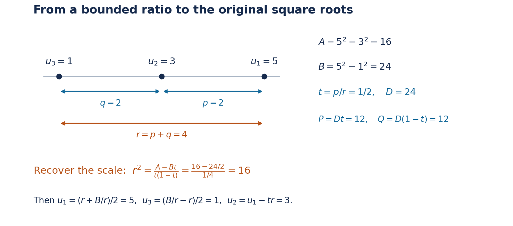

Superelliptic, hyperelliptic and Mordell equations
Authoring and mathematical self-check: OpenAI Codex — GPT-6 Astra, Ultra. Original exposition, CC0.
The factorization of a polynomial at an integral argument gives an equation of ideals. Outside a fixed finite set of primes, the factors are relatively prime. If their product is an \(m\)-th power up to a fixed coefficient, their individual valuations are multiples of \(m\). The first task is to turn this statement about ideals into a finite list of equations about elements. Nonprincipal ideals and units must both be accounted for.
The freely accessible paper of Bérczes, Evertse and Győry, Effective results for hyper- and superelliptic equations over number fields, Lemma 4.2 and the proofs of Theorems 2.1–2.2, develops this factorization method with explicit height estimates. We prove the reductions needed here from the programme's ideal, unit and Thue theorems. Our computable constants are not asserted to be the sharper constants in that paper.
Siegel's 1926 letter to Mordell developed the descent for polynomial square equations; his 1929 work placed integral points in a broader geometric setting. The distinction between the affine equation \(y^2=f(x)\) and an arbitrary affine model of the same projective curve matters, because their integrality conditions can differ. For this historical context see Levent Alpöge's free Note on a theorem of Professor X, Introduction. Baker's logarithmic method makes the descents effective. Below, the three-factor reduction computes integral solutions, and the genus-one argument separately supplies the necessary denominator control for an arbitrary affine equation.
Prerequisite proofs
| Input | Programme proof |
|---|---|
| Heights and effective finite lists of bounded height | Heights of algebraic numbers, Theorems 2.4 and 2.6–2.8 |
| Unique ideal factorization and ideal norms | Discrete valuation rings and Dedekind domains and Norms, class groups, and modules over Dedekind domains |
| A bounded integral ideal in every ideal class | Finiteness of the class number, Theorem 8.1 and the bounded-ideal lemma |
| Fundamental units and balancing by powers of units | Lesson 12, Lemma 12.5 and Lesson 13, Lemma 13.1 |
| Effective Thue equations over a number field | Lesson 13, Theorem 13.2 |
Throughout, \(h\) denotes absolute logarithmic height, with \(h(0)=0\), and \(O_L\) the ring of integers of a number field \(L\).
1. A finite list of power coefficients
Lemma 15.1. Fix a number field \(L\), a finite set \(\mathcal P\) of its nonzero prime ideals, and an integer \(m\ge2\). There is an effectively computable finite set \(\mathcal R=\mathcal R(L,\mathcal P,m)\subset L^\times\) such that every nonzero \(z\in O_L\) satisfying \[ \operatorname{ord}_{\mathfrak p}(z)\equiv0\pmod m \qquad(\mathfrak p\notin\mathcal P) \tag{15.1} \] has a representation \[ z=\mu\xi^m,\qquad \mu\in\mathcal R,\quad \xi\in O_L. \tag{15.2} \] The set may contain coefficients that do not occur in any solution.
Here is one explicit finite-list prescription. Put \(d=[L:\mathbb Q]\). Choose an integer \(B\ge1\) at least the Minkowski ideal-class bound in Theorem 8.1 of Finiteness of the class number. Let \(r\) be the ordinary unit rank, and choose \(V\ge1\) bounding the heights of the fundamental units supplied by Lemma 12.5. Set \[ T=\prod_{\mathfrak p\in\mathcal P}N\mathfrak p,\qquad D_0=(B!)^m,\qquad A_0=2\log D_0+\frac{m-1}{d}\log T+mrV+1. \tag{15.3} \] Empty products are one. Take an effective Northcott finite list containing every element of \(L\) with height at most \(A_0\), using a rational upper bound for \(A_0\), and discard zero and any member for which \(D_0\mu\notin O_L\). The remaining set works. No exact comparison of an algebraic number's height with \(A_0\) is required.
Proof. Divide the nonnegative prime-ideal exponents of \((z)\) by \(m\). The remainders outside \(\mathcal P\) vanish, so \[ (z)=\mathfrak c\,\mathfrak a^m,\qquad \mathfrak c=\prod_{\mathfrak p\in\mathcal P} \mathfrak p^{e_{\mathfrak p}}, \quad 0\le e_{\mathfrak p}<m, \tag{15.4} \] with \(\mathfrak a,\mathfrak c\) integral ideals. In particular \(N\mathfrak c\le T^{m-1}\).
Minkowski's bound gives an integral ideal \(\mathfrak i\) in the inverse class of \(\mathfrak a\), with \(N\mathfrak i\le B\). Then \(\mathfrak a\mathfrak i=(\rho)\) for some nonzero \(\rho\in O_L\). Put \(\gamma=z/\rho^m\). Its fractional ideal is \[ (\gamma)=\mathfrak c\,\mathfrak i^{-m}. \tag{15.5} \] If \(q=N\mathfrak i\), the finite additive group \(O_L/\mathfrak i\) has order \(q\), so \(qO_L\subseteq\mathfrak i\). Since \(q\le B\), we have \(B!\in\mathfrak i\), and therefore \(D_0\gamma\in O_L\).
Its nonzero integral norm satisfies \[ 1\le |N_{L/\mathbb Q}(D_0\gamma)| =D_0^d\frac{N\mathfrak c}{(N\mathfrak i)^m} \le D_0^dT^{m-1}. \tag{15.6} \] Apply Lemma 13.1 to this algebraic integer, using the power \(m\). Some ordinary unit \(\epsilon\) satisfies \[ h(\epsilon^mD_0\gamma) \le\log D_0+\frac{m-1}{d}\log T+mrV. \tag{15.7} \] Consequently, for \[ \mu=\epsilon^m\gamma,\qquad \xi=\rho/\epsilon, \tag{15.8} \] we have \(\xi\in O_L\), \(D_0\mu\in O_L\), \(z=\mu\xi^m\), and \(h(\mu)<A_0\). Thus \(\mu\) occurs in the prescribed finite list.
This is also an effective construction of a sufficient list. It never has to decide which of the finitely many ideals \(\mathfrak c\mathfrak i^{-m}\) are principal. If a particular representation of \(z\) is wanted, enumerate the finite choices of \(\mu\) and solve \(U^m=z/\mu\) in \(L\), testing integrality. The existence argument proves that one test succeeds. \(\square\)
Over \(\mathbb Q\), there is a simpler exact list. If \(\mathcal P\) corresponds to the rational primes \(p_1,\ldots,p_t\), unique factorization gives \[ z=\mu\xi^m,\qquad \mu=\operatorname{sgn}(z)\prod_{j=1}^t p_j^{e_j}, \quad 0\le e_j<m,\quad \xi\in\mathbb Z_{\ge1}. \tag{15.9} \] Indeed divide each exponent of \(|z|\) by \(m\); the quotients form \(\xi\), and the remainders form \(\mu\). This proves the rational case without a class group or unit lattice.
2. Separating the factors of a polynomial
Let \[ f(X)=aX^n+a_1X^{n-1}+\cdots+a_n\in O_K[X], \qquad a\ne0,\qquad b\in O_K\setminus\{0\}, \tag{15.10} \] and assume \(f\) has no repeated root. Fix an exponent \(m\ge2\). We study \(f(x)=by^m\) with \(x,y\in O_K\). Multiplying \(f\) and \(b\) by a common denominator reduces arbitrary fixed coefficients in \(K\) to this setting.
In a fixed splitting field \(L\), write \(f(X)=a\prod_i(X-\alpha_i)\), and put \(\beta_i=a\alpha_i\). The \(\beta_i\) are distinct algebraic integers: they are roots of the monic polynomial \[ a^{n-1}f(U/a) =U^n+a_1U^{n-1}+aa_2U^{n-2}+\cdots+a^{n-1}a_n. \tag{15.11} \] For an integral \(x\) define \(z_i=ax-\beta_i\). Then \[ \prod_{i=1}^n z_i=a^{n-1}by^m,\qquad z_i-z_j=\beta_j-\beta_i. \tag{15.12} \]
Lemma 15.2 (finite power-factor reduction). For fixed \(K,f,b,m\), one can compute a finite set \(\mathcal R\subset L^\times\) such that every solution with \(y\ne0\) satisfies \[ ax-\beta_i=\mu_i\xi_i^m,\qquad \mu_i\in\mathcal R,\quad \xi_i\in O_L,\quad i=1,\ldots,n. \tag{15.13} \]
Proof. Let \(\mathcal P\) contain every prime ideal dividing the fixed nonzero algebraic integer \[ a^{n-1}b\prod_{i<j}(\beta_i-\beta_j). \tag{15.14} \] At a prime outside \(\mathcal P\), at most one \(z_i\) has positive valuation: two such factors would force the prime to divide their fixed difference. Taking valuations in (15.12) shows that the sum of the valuations of all \(z_i\) is \(m\operatorname{ord}_{\mathfrak p}(y)\). Thus each individual valuation is a multiple of \(m\). Every \(z_i\) is nonzero because \(b y^m\ne0\). Apply Lemma 15.1 to each factor, with this fixed set \(\mathcal P\). All choices of the resulting finite coefficients can be listed before any solution is known. \(\square\)
The \(y=0\) solutions require no reduction: they are the roots of \(f\) that belong to \(O_K\), paired with zero.
3. Superelliptic equations of fixed exponent
Theorem 15.3. Suppose \(f\) has no repeated root, \(n\ge2\), and \(m\ge3\). For fixed \(K,f,b,m\), the integral solutions \[ f(x)=by^m,\qquad x,y\in O_K, \tag{15.15} \] form an effectively computable finite set. A computable height bound for both coordinates follows from finitely many applications of Theorem 13.2.
Proof. Treat \(y=0\) separately as above. For \(y\ne0\), choose the first two distinct roots and apply Lemma 15.2. Subtracting their equations gives \[ \mu_1\xi_1^m-\mu_2\xi_2^m=\beta_2-\beta_1\ne0. \tag{15.16} \] For each of the finitely many pairs \((\mu_1,\mu_2)\), the left side is a homogeneous binary form of degree \(m\) over \(L\). It has \(m\) distinct linear factors over its splitting field: the polynomial \(\mu_1U^m-\mu_2\) has nonzero constant term, and its derivative vanishes only at \(U=0\), which is not a root. Since \(m\ge3\), Theorem 13.2 applies to the integral pair \((\xi_1,\xi_2)\).
More explicitly, if \(C_{\mu_1,\mu_2}\) denotes its computable constant for this binary form, put \[ E_{\mu_1,\mu_2} =C_{\mu_1,\mu_2}\max\{h(\beta_2-\beta_1),1\}. \tag{15.17} \] Then both \(\xi_i\) have height at most \(E_{\mu_1,\mu_2}\). Effective Northcott finiteness supplies finite lists containing them. Test (15.16) in exact algebraic arithmetic, and recover \[ x=\frac{\beta_1+\mu_1\xi_1^m}{a}. \tag{15.18} \] Retain only \(x\in O_K\). For each such \(x\), solve \(Y^m=f(x)/b\) in \(K\) and retain its integral roots. There are at most \(m\) roots, including just zero when the right side is zero. Test the original equation. Every solution occurs in this finite procedure.
For a height version, (15.18) gives \[ h(x)\le h(\beta_1)+h(\mu_1)+mE_{\mu_1,\mu_2} +h(a)+\log2. \tag{15.19} \] Take the maximum over the finite coefficient pairs and the finitely many integral roots of \(f\) already treated when \(y=0\). If \(H_f=h(a)+\sum_{i=1}^n h(a_i)\), the local polynomial estimate gives \(h(f(x))\le H_f+nh(x)+\log(n+1)\): at a nonarchimedean place use the maximum of the terms, and at an archimedean place multiply that maximum by \(n+1\). Summing over normalized places and using \(\log(n+1)\le n\log2\) therefore gives \[ mh(y)\le h(b)+H_f+nh(x)+n\log2. \tag{15.20} \] This proves a computable bound for \(y\) as well. \(\square\)
The exponent is fixed in this theorem. A bound for an unknown exponent is a separate assertion. Repeated roots also cannot be ignored: \(f(X)=X^m\), \(b=1\), has \(y=x\) for every integral \(x\).
4. Three squares and cubic Thue equations
For exponent two, a difference of two powers is only a quadratic form, and Theorem 13.2 does not apply. A third distinct factor provides an extra relation.
Lemma 15.4. Fix a number field \(M\) and nonzero \(A,B\in O_M\) with \(A\ne B\). All integral triples satisfying \[ u_1^2-u_2^2=A,\qquad u_1^2-u_3^2=B, \qquad u_1,u_2,u_3\in O_M \tag{15.21} \] can be found effectively by reduction to finitely many cubic Thue equations over \(M\).
Proof. Put \[ p=u_1-u_2,\qquad q=u_2-u_3,\qquad r=u_1-u_3=p+q. \tag{15.22} \] They are nonzero because their products with the corresponding sums are \(A,B-A,B\), respectively. Thus the prime ideals dividing \(p,q,r\) belong to the fixed set of primes dividing \(AB(B-A)\).
Let \(D=|N_{M/\mathbb Q}(B)|\), a positive rational integer. We have \(D/B\in O_M\). To see this, use the nonzero constant term of the monic minimal polynomial of \(B\) to express that constant term divided by \(B\) as an integral polynomial in \(B\); the field norm is a signed positive integral power of that constant term. Since \(r(u_1+u_3)=B\), \[ \frac Dr=\frac DB(u_1+u_3)\in O_M. \tag{15.23} \] Hence \[ P=\frac{Dp}{r},\qquad Q=\frac{Dq}{r} \tag{15.24} \] are nonzero algebraic integers with \(P+Q=D\). Their prime ideal supports lie in the fixed set \(\mathcal P\) of primes dividing \(DAB(B-A)\): outside it, each of \(D,p,q,r\) has valuation zero.
Apply Lemma 15.1 with exponent three to \(P\) and \(Q\). It gives finitely many nonzero coefficients \(\mu,\nu\) with \[ P=\mu\xi^3,\qquad Q=\nu\eta^3,\qquad \mu\xi^3+\nu\eta^3=D,\qquad \xi,\eta\in O_M. \tag{15.25} \] Each binary cubic has three distinct linear factors, by the derivative argument used in Theorem 15.3. Theorem 13.2 therefore computes a bound, and a finite search, for \((\xi,\eta)\). We obtain finitely many candidates \[ t=\frac p r=\frac{\mu\xi^3}{D}. \tag{15.26} \] Discard \(t=0,1\).
It remains to recover the scale; ratios alone do not suffice. From the two difference-of-squares identities we have \[ u_1+u_2=\frac A{tr},\qquad u_1+u_3=\frac Br. \] Subtracting gives \(u_2-u_3=(1-t)r\), hence \[ r^2=\frac{A-Bt}{t(1-t)}. \tag{15.27} \] Discard a zero right side. There are at most two square roots in \(M\). For each nonzero root recover \[ u_1=\frac{r+B/r}{2},\qquad u_3=\frac{B/r-r}{2},\qquad u_2=u_1-tr. \tag{15.28} \] Check integrality and both equations (15.21). These tests remove any extraneous candidate introduced by the finite coefficient lists. Every actual triple passes through this construction, so the procedure is complete.
The construction also gives height bounds without first listing the solutions. If the cubic Thue bounds give \(h(t)\le H_t\), then (15.27) yields \[ 2h(r)\le h(A)+h(B)+3H_t+2\log2. \tag{15.29} \] Equation (15.28) gives \[ h(u_1),h(u_3)\le 2h(r)+h(B)+2\log2, \qquad h(u_2)\le h(u_1)+H_t+h(r)+\log2. \tag{15.30} \] Take the maxima of these expressions over the finitely many cubic equations. \(\square\)
The denominators in (15.24) are controlled by the fixed norm \(D\). This is why the reduction produces Thue equations in algebraic integers, rather than equations with unrestricted denominators.

Figure 15.1. Lemma 15.4 separates the ratio from the scale. At \((u_1,u_2,u_3)=(5,3,1)\), the differences give \(p=q=2\), \(r=4\), \(A=16\) and \(B=D=24\). Hence \(P=Q=12\) and \(t=1/2\). Equation (15.27) recovers \(r^2=16\), and (15.28) recovers the original triple up to simultaneous sign. The point labels and displayed equations describe the same exact example. Reproducible source: three-square-recovery.py.
5. Effective hyperelliptic finiteness
Theorem 15.5. Let \(K,f,b\) satisfy (15.10), with \(f\) having no repeated root and degree \(n\ge3\). Then \[ f(x)=by^2,\qquad x,y\in O_K, \tag{15.31} \] has an effectively computable finite set of solutions. In particular this applies to a product of at least three distinct linear factors \(X-\alpha_i\) with algebraic-integral roots in a fixed number field.
Proof. Treat \(y=0\) by finding the roots of \(f\). For every other solution Lemma 15.2, with \(m=2\), gives \[ ax-\beta_i=\mu_i\xi_i^2,\qquad \xi_i\in O_L. \tag{15.32} \] Use three distinct roots. There are finitely many choices of \((\mu_1,\mu_2,\mu_3)\). For each, pass to the fixed field \[ M=L(\sqrt{\mu_1},\sqrt{\mu_2},\sqrt{\mu_3}). \tag{15.33} \] Choose a positive integer \(c\) such that \(c\sqrt{\mu_i}\in O_M\) for \(i=1,2,3\). Denominators in an integral basis give such a \(c\) effectively. Then the elements \(u_i=c\sqrt{\mu_i}\xi_i\) are integral, and \[ u_1^2-u_2^2=c^2(\beta_2-\beta_1)=A,\qquad u_1^2-u_3^2=c^2(\beta_3-\beta_1)=B. \tag{15.34} \] Here \(A,B\in O_M\), and \(A,B,B-A\) are all nonzero. Lemma 15.4 gives finitely many possible triples. Recover \[ x=\frac{u_1^2/c^2+\beta_1}{a}, \tag{15.35} \] retain \(x\in O_K\), solve \(Y^2=f(x)/b\) in \(K\), and test integrality and the original equation. Again all operations involve finitely many effectively bounded lists and exact tests.
For an explicit computable height prescription, use (15.29)–(15.30) and \[ h(x)\le 2h(u_1)+2\log c+h(\beta_1)+h(a)+\log2. \tag{15.36} \] Equation (15.20), now with \(m=2\), bounds \(h(y)\). Maximize over the finite choices of coefficients and fields, and the integral roots of \(f\) treated separately when \(y=0\). The result depends only on the original fixed data. \(\square\)
Both exclusions in this theorem have mathematical content. For a repeated-root example, \(Y^2=X^2(X+1)\) has \[ X=t^2-1,\qquad Y=t(t^2-1),\qquad t\in\mathbb Z. \] For degree two, the Pell equation \(Y^2-2X^2=1\) has infinitely many integral solutions, as proved by the recurrence in Lesson 13. A degree condition alone does not replace the distinct-root condition.
6. Mordell and Weierstrass equations
For \(k\in O_K\setminus\{0\}\), the polynomial \(X^3+k\) has no repeated root: a common root with its derivative \(3X^2\) would be zero, whereas its value at zero is \(k\). Theorem 15.5 therefore computes all integral solutions of \[ y^2=x^3+k. \] It also gives a computable bound for their heights. The restriction \(k\ne0\) is necessary: \(x=t^2,y=t^3\) gives infinitely many solutions when \(k=0\).
The same conclusion applies to a general Weierstrass equation, with an explicit integrality test in the reverse direction.
Corollary 15.6. Fix \(a_1,a_2,a_3,a_4,a_6\in O_K\), and put \[ g(X)=4X^3+(a_1^2+4a_2)X^2 +(2a_1a_3+4a_4)X+a_3^2+4a_6. \] Assume \(g\) has no repeated root. Then one can compute all \(x,y\in O_K\) satisfying \[ y^2+a_1xy+a_3y=x^3+a_2x^2+a_4x+a_6. \]
Proof. Completing the square gives the exact identity \[ (2y+a_1x+a_3)^2=g(x). \] Every integral solution therefore gives an integral solution \((x,Y)\) of \(Y^2=g(x)\), with \(Y=2y+a_1x+a_3\). Compute the latter finite list by Theorem 15.5. For each pair, form \(y=(Y-a_1x-a_3)/2\) and retain it precisely when \(y\in O_K\). Substitution proves both the converse and the completeness of the resulting list. The height bound follows from \[ h(y)\le h(Y)+h(a_1)+h(x)+h(a_3)+3\log2. \] All the coefficients are fixed, so this is effective. \(\square\)
The condition on \(g\) can be tested exactly by computing the greatest common divisor of \(g\) and \(g'\). When it holds, the affine curve \(Y^2=g(X)\) is nonsingular: simultaneous vanishing of the partial derivatives would require \(Y=0\), \(g(X)=0\), and \(g'(X)=0\). Its projective cubic has a unique point at infinity, \([X:Y:Z]=[0:1:0]\); the derivative with respect to \(Z\) of \(Y^2Z-4X^3-\cdots\) is one there. Thus the point at infinity is nonsingular as well.
An arbitrary birational map need not preserve integral coordinates. For example \(X=1/x\) carries most nonzero integers to nonintegers. Passing from an arbitrary affine genus-one equation to a Weierstrass equation therefore requires a separate argument controlling denominators.
General affine curves of genus one
We use genus in its geometric sense: the genus of the smooth projective model of the function field. Thus singularities of a chosen plane equation do not change which genus is meant. The necessary geometric input is Riemann–Roch, Theorem 30.2 in Bundles, Sheaves and Cohomology. It proves \(\ell(D)-h^1(O(D))=\deg D+1-g\). We also use the programme proofs of finite normalization, Theorem 5.1, and the DVR criterion, Theorem 1.2. The arguments below explain the additional curve facts and the effective passage needed for integral points.
The reduction is developed quantitatively in Wolfgang M. Schmidt's freely accessible paper Integer points on curves of genus 1, Proposition 1 and Section 6. Here we need a terminating construction, without the sharper coefficient-height estimates of that paper.
Theorem 15.7 (effective integral points on an affine genus-one curve). Let \(K\) be a number field and \(F\in K[X,Y]\) an absolutely irreducible polynomial whose curve has geometric genus one. There is an algorithm, terminating for every such input, that finds exactly the pairs \((x,y)\in O_K^2\) with \(F(x,y)=0\). Consequently their heights have a computable upper bound. The statement concerns integral points in the given affine coordinates, not all rational points on the projective curve.
Proof. We first prove the existence of appropriate functions, then give a finite-verification search for them. The latter separates effectivity from the choice of a particular implementation of Riemann–Roch.
Functions with one pole. Work initially over an algebraic closure \(\overline K\). Normalize the projective closure of the plane curve. Finite normalization gives a projective normal curve \(C\); its local rings at closed points are DVRs, so it is nonsingular. Let \(A=\overline K[X,Y]/(F)\), and let \(B\) be its integral closure in the function field. The preimage of the affine plane curve in \(C\) is \(\operatorname{Spec}B\).
Choose a point \(P\) outside this affine open. Such a point exists: the nonconstant coordinate \(X\) must have a pole on the projective curve. A global regular function on an integral projective curve is constant. One way to see this is to view it as a morphism to the projective line: the image of the proper curve is closed, and a nonconstant image would be the whole line, including infinity.
We claim \[ \ell(nP)=n\qquad(n\ge1). \] Riemann–Roch gives \(\ell(nP)\ge n\), since \(g=1\). There cannot be a nonconstant function with just a simple pole at \(P\). Such a function would define a degree-one map to the projective line and identify their function fields, forcing genus zero.
Here are the curve facts in this last step. A rational map from a nonsingular curve to projective space extends at every point: in its DVR, multiply homogeneous coordinates by a common power of a uniformizer until all are integral and at least one is a unit. A nonconstant map of projective curves is finite. Indeed its fibers are zero-dimensional; the proper quasi-finite case of Zariski's Main Theorem, Theorem 5.1 is finite. At a point of the target, the finite torsion-free module over its DVR is free, of rank equal to the function-field degree. Reducing modulo the uniformizer shows that this degree is the sum of the orders of its pullback at the points of the fiber. A single simple pole therefore gives degree one. Birational nonsingular projective curves are isomorphic: extend the rational maps in both directions by the DVR argument, and use equality on their dense open sets to see that the composites are identities. Finally \(H^1(\mathbb P^1,O)=0\): on its two affine charts, every Laurent polynomial is the sum of a polynomial in \(T\) and a polynomial in \(T^{-1}\). This computes the first Čech cohomology. Thus a degree-one function would indeed contradict genus one.
It follows that \(\ell(P)=1\). For each \(n\), taking the coefficient of a local term of order \(-n\) at \(P\) gives an injection \(L(nP)/L((n-1)P)\hookrightarrow\overline K\). Hence \(\ell(nP)\le n\), proving the claim. Choose \(u\in L(2P)\setminus L(P)\) and \(v\in L(3P)\setminus L(2P)\). Their pole orders at \(P\) are exactly two and three.
The seven functions \[ 1,\quad u,\quad v,\quad u^2,\quad uv,\quad u^3,\quad v^2 \] belong to the six-dimensional space \(L(6P)\). Their linear relation must involve both \(u^3\) and \(v^2\): otherwise the nonzero summands have different pole orders, and the largest pole cannot cancel. After division and completing a square, this relation has the form \[ w^2=g(u),\qquad w=v+\alpha u+\beta,\qquad \deg g=3. \] Both \(u,w\) are regular on \(C\setminus\{P\}\).
We check that \(g\) is squarefree. The monomials \[ 1,u,u^2,\ldots,\qquad v,uv,u^2v,\ldots \] have distinct pole orders \(0,2,4,\ldots\) and \(3,5,7,\ldots\). Those of order at most \(n\) form a basis of \(L(nP)\), since there are \(n\) of them for \(n\ge1\). Given any rational function \(h\), multiply it by a sufficiently high product of factors \(u-u(Q)\), for its finitely many poles \(Q\ne P\). The product clears those poles and has no new pole outside \(P\). The resulting function lies in some \(L(nP)\), so \(h\in\overline K(u,v)=\overline K(u,w)\). Thus \(u,w\) generate the function field. If \(g(T)=c(T-e)^2(T-f)\), putting \(t=w/(u-e)\) gives \(u=f+t^2/c,\ w=(u-e)t\). This also covers a triple root. It would make the function field rational, contradicting genus one by the preceding birational argument. Therefore \(g\) has no repeated root.
Integral equations for the functions. Since \(u,w\) are regular on the affine normalization \(\operatorname{Spec}B\), they belong to \(B\). By its definition, each satisfies a monic polynomial with coefficients in \(A\). All coefficients occurring in \(u,w,g\) and these two monic identities belong to some finite extension \(L/K\). Enlarge \(L\) once to contain them. Write the identities with coefficients in \(L[X,Y]\), modulo \(F\).
Choose a positive rational integer \(D\) clearing the coefficients of both monic identities. If, for example, \[ u^s+c_1u^{s-1}+\cdots+c_s=0,\qquad c_i\in L[X,Y], \] then \(U=Du\) satisfies \[ U^s+(Dc_1)U^{s-1}+\cdots+D^sc_s=0 \] with coefficients in \(O_L[X,Y]\). The same holds for \(W=Dw\). At every integral pair \((x,y)\in O_K^2\) where their rational formulas are defined, \(U(x,y)\) and \(W(x,y)\) are algebraic integers in \(L\), hence belong to \(O_L\). They satisfy \[ W^2=D^2g(U/D). \] Multiplying this equation by a fixed common denominator puts it into the form \(f_0(U)=b_0W^2\), with \(f_0\in O_L[U]\), \(b_0\in O_L\setminus\{0\}\), and \(f_0\) a squarefree cubic. Theorem 15.5 computes all its integral solutions over \(L\).
A terminating search and recovery. The functions and identities just described are finite algebraic data. Enumerate finite extensions \(L/K\), rational functions \(U,W\in\operatorname{Frac}(L[X,Y]/(F))\), a squarefree cubic and two monic integrality identities. All have finite encodings, so enumerate them by successively larger encoding lengths. Test each candidate by clearing denominators and reducing the polynomial identities modulo \(F\). Nonconstancy of \(U=A/B\) is decidable by testing whether \(A-cB\) vanishes modulo \(F\) for a scalar \(c\in L\); coefficient comparison is a finite linear system. Require \(U\) to be nonconstant. The preceding existence proof ensures that a passing candidate eventually appears. Clear its fixed denominators as above and apply Theorem 15.5.
For each resulting value \(U_0\), recover all original pairs by solving \[ F(x,y)=0,\qquad A(x,y)-U_0B(x,y)=0. \] The second polynomial is nonzero modulo \(F\), because \(U\) is nonconstant. Its intersection with the absolutely irreducible curve is therefore finite and effectively computable. Explicitly, the Euclidean algorithm over \(L(X)[Y]\), followed by clearing denominators, gives a nonzero polynomial in \(X\) in the ideal of these two equations. List its roots, then solve the resulting polynomials in \(Y\). For any fixed root \(x_0\), \(F(x_0,Y)\) is not the zero polynomial: otherwise \(X-x_0\) would divide \(F\), contrary to absolute irreducibility and genus one. This bounds and computes every candidate.
Apply the same finite-intersection procedure to \(F=0\) and each denominator in the original rational formulas, retaining only denominators nonzero modulo \(F\). This accounts separately for every point where a formula was undefined, including any singular points in this exceptional set. For all lists, test the original equation, membership in \(K\), and integrality in \(O_K\), and discard repetitions. Every integral point either passes through the Weierstrass reduction or lies in one of the computed exceptional sets. Conversely all retained points satisfy the original requirements. The procedure terminates and gives exactly the desired set. A rational upper bound for the largest height in that finite set, taking zero for the empty set, is a computable height bound. \(\square\)
The denominator control here comes from monic equations on the affine normalization. It is stronger than simply writing down a birational map: it bounds the denominators of its values independently of the integral point.
7. Three complete elementary examples
The effective general theorem bounds a search. In special cases, factorization and congruences can determine the solutions directly. Keith Conrad's free notes Examples of Mordell's equation, Theorems 2.1 and 3.4 give the two Mordell examples below. We include the requisite factorization argument in the quadratic ring.
Proposition 15.8. The integer solutions of \(y^2=x^3-2\) are exactly \((x,y)=(3,5),(3,-5)\).
Proof. Write \(w=\sqrt{-2}\) and \(R=\mathbb Z[w]\). The norm \(N(a+bw)=a^2+2b^2\) is multiplicative. If \(\alpha,\beta\in R\) with \(\beta\ne0\), express \(\alpha/\beta=s+tw\) with \(s,t\in\mathbb Q\). Choose integers \(a,b\) within \(1/2\) of \(s,t\). Then \[ N\bigl(\alpha/\beta-(a+bw)\bigr) =(s-a)^2+2(t-b)^2\le\frac34<1. \tag{15.37} \] Thus \(\alpha=\beta(a+bw)+\rho\), where \(N(\rho)<N(\beta)\). The Euclidean algorithm terminates and expresses a greatest common divisor as a linear combination. Consequently every irreducible \(\pi\) is prime: if \(\pi\nmid a\), a relation \(u\pi+va=1\) shows from \(\pi\mid ab\) that \(\pi\mid b\). Factorization into irreducibles terminates because a proper factorization of a nonunit strictly decreases its positive integral norm. Primality then gives uniqueness, up to units and order. The units are precisely \(1,-1\), since \(a^2+2b^2=1\) has just \((a,b)=(1,0),(-1,0)\).
Now \(y^2+2=x^3>0\), so \(x>0\). An even \(x\) would give \(y^2\equiv6\pmod8\), which is impossible. Hence both \(x,y\) are odd. In \(R\), \[ (y+w)(y-w)=x^3. \tag{15.38} \] Any common irreducible factor of \(y+w,y-w\) divides \(2w\). Since \(2w=-w^3\) and \(N(w)=2\), that factor must be associated to \(w\). But \[ w(a+bw)=-2b+aw \] has even constant coefficient, whereas \(y+w\) has odd constant coefficient. Therefore the two factors in (15.38) are relatively prime. Each irreducible exponent in \(y+w\) is divisible by three. Its unit is also a cube, and hence \[ y+w=(u+vw)^3 =u^3-6uv^2+v(3u^2-2v^2)w,\qquad u,v\in\mathbb Z. \tag{15.39} \] The coefficient of \(w\) gives \(v(3u^2-2v^2)=1\). Thus \(v=1\) or \(-1\). For \(v=1\), \(u^2=1\); for \(v=-1\), \(3u^2=1\), which is impossible. Substituting \(u=\pm1,v=1\) gives \(y=\mp5\), and then \(x^3=27\). Both resulting pairs satisfy the equation. \(\square\)
Proposition 15.9. There are no integers \(x,y\) satisfying \(y^2=x^3+7\).
Proof. If \(x\) were even, reducing modulo eight would give \(y^2\equiv7\pmod8\), impossible. Thus \(x\) is odd and \(y\) is even. Reduction modulo four gives \(x\equiv1\pmod4\). Also \(x\ge-1\), because \(x\le-2\) makes \(x^3+7<0\). In particular \(x+2\) is positive and congruent to three modulo four. In its prime factorization some prime \(q\equiv3\pmod4\) must have odd exponent; otherwise the product would be one modulo four. On the other hand, \[ y^2+1=x^3+8=(x+2)(x^2-2x+4) \tag{15.40} \] would imply \(y^2\equiv-1\pmod q\).
For completeness, this last congruence is impossible. If \(y\not\equiv0\pmod q\), multiplication by \(y\) permutes the \(q-1\) nonzero residues. Multiplying them and cancelling their nonzero product gives \(y^{q-1}\equiv1\pmod q\). But \(y^2\equiv-1\pmod q\) gives instead \(y^{q-1}\equiv(-1)^{(q-1)/2}=-1\pmod q\), a contradiction. \(\square\)
Proposition 15.10. The integer points on \[ Y^2=X(X-1)(X+1) \tag{15.41} \] are \((-1,0),(0,0),(1,0)\). For a hypothetical solution with \(X\ge2\), the squarefree coefficient triples in \[ (X-1,X,X+1)=(\mu_1u^2,\mu_2v^2,\mu_3w^2), \qquad \mu_i\text{ positive and squarefree}, \tag{15.42} \] are restricted to \((1,1,1)\) when \(X\) is even and \((2,1,2)\) when \(X\) is odd.
Proof. For \(X\le-2\) the product is negative. The values \(X=-1,0,1\) give exactly the asserted points. It remains to exclude \(X\ge2\), when all three factors are positive.
An odd prime divides at most one of \(X-1,X,X+1\), since the difference of any two is one or two. Its exponent there must be even. Thus each \(\mu_i\) is one or two. If \(X\) is even, the outer factors are odd, so \(\mu_1=\mu_3=1\); the product being a square forces \(\mu_2=1\). The outer factors would then be odd squares differing by two, impossible modulo four.
If \(X\) is odd, the middle factor is an odd square, so \(\mu_2=1\). Exactly one of its two neighbors has 2-adic valuation one. The sum of their 2-adic valuations is even, so both valuations are odd and \(\mu_1=\mu_3=2\). Write \(X-1=2u^2\) and \(X+1=2w^2\), with \(u,w>0\). Then \((w-u)(w+u)=1\), which would force \(u=0,w=1\). This contradicts \(X\ge2\). \(\square\)
The coefficient triples in (15.42) are obtained before solving the remaining equations. Listing possible coefficients is an intermediate reduction; it does not assert that every listed triple occurs for a solution.
8. Ramanujan–Nagell with a finite certificate
Here the exponent is a variable. Splitting its parity turns the problem into a difference of squares or a Pell-type equation. Curtis Bright's freely accessible paper Solving Ramanujan's square equation computationally, pages 1–3 supplies a useful congruence modulus. We prove the needed Pell reduction directly and give an exact certificate for the resulting finite arithmetic check.
Theorem 15.11. For \(x\in\mathbb Z\) and \(n\in\mathbb Z_{\ge0}\), \[ x^2+7=2^n \tag{15.43} \] holds exactly when \[ (|x|,n)\in\{(1,3),(3,4),(5,5),(11,7),(181,15)\}. \tag{15.44} \]
Proof. The equation has no solution for \(n<3\), and \(x=0\) is impossible. Replacing \(x\) by \(|x|\), assume \(x>0\).
First let \(n=2k\). Since \(2^k>x\), \[ (2^k-x)(2^k+x)=7. \tag{15.45} \] The positive factors must be one and seven, respectively. Their sum and difference give \(2^k=4,x=3\), hence \(n=4\).
Now let \(n=2k+1\) and put \(y=2^k\). We must solve \[ x^2-2y^2=-7,\qquad y\text{ a positive power of two}. \tag{15.46} \] Put \(\epsilon=3+2\sqrt2\), so \(\epsilon^{-1}=3-2\sqrt2\). For any integer solution with \(y>0\), the real number \(\alpha=x+y\sqrt2\) is positive and has conjugate \(-7/\alpha\). Multiplication by any integral power of \(\epsilon\) keeps both coefficients integral and preserves the norm. Choose \(j\in\mathbb Z\) such that \[ \frac{\sqrt7}{1+\sqrt2} \le \alpha\epsilon^{-j} <\sqrt7(1+\sqrt2). \tag{15.47} \] Such \(j\) exists because the ratio of the endpoints is \(\epsilon>1\). Write \(\alpha\epsilon^{-j}=a+b\sqrt2\). The norm identity gives \[ b=\frac{\alpha\epsilon^{-j} +7/(\alpha\epsilon^{-j})}{2\sqrt2}. \tag{15.48} \] Over the closed interval in (15.47), the numerator has its minimum at \(\sqrt7\) and its maximum at the endpoints. It follows that \[ \sqrt{7/2}\le b\le\sqrt7<3. \tag{15.49} \] Since \(b\) is an integer, \(b=2\); then \(a^2=1\). We have proved, without assuming a general Pell theorem, that every solution arises from \(1+2\sqrt2\) or \(-1+2\sqrt2\) by multiplying by a power of \(\epsilon\).
Define integers \(X_i,Y_i\), for all \(i\in\mathbb Z\), by \[ X_i+Y_i\sqrt2=(1+2\sqrt2)\epsilon^i. \tag{15.50} \] The second initial element is the negative conjugate of the first, so its multiples have the same \(Y\)-coordinates as \(Y_{-i}\). Thus every \(y\) in (15.46) equals some \(Y_i\). Since \(\epsilon+\epsilon^{-1}=6\), \[ Y_0=2,\qquad Y_1=8,\qquad Y_{i+2}=6Y_{i+1}-Y_i \quad(i\in\mathbb Z). \tag{15.51} \] This recurrence is invertible: \(Y_i=6Y_{i+1}-Y_{i+2}\).
We next show that \(Y_i\) cannot be \(2^k\) for \(k\ge8\). Take \[ M=256\cdot7681=1966336. \tag{15.52} \] Iteration of (15.51) modulo \(M\) for 256 steps gives \[ (Y_{256},Y_{257})\equiv(2,8)\pmod M. \tag{15.53} \] The recurrence and its inverse imply that these 256 steps cover every residue \(Y_i\), including negative indices. Among these residues, the ones divisible by 256, after division by 256 and reduction modulo 7681, form exactly \[ \{2532,5149\}. \tag{15.54} \] The following modular powers finish the exclusion: \[ 2^{3840}\equiv1,\qquad 2532^{3840}\equiv5149^{3840}\equiv-1\pmod{7681}. \tag{15.55} \] Indeed if \(Y_i=2^k\) with \(k\ge8\), division by 256 would make \(2^{k-8}\) congruent to one of (15.54). Its 3840th power is one by the first congruence in (15.55), contradicting the other two. No primality test for 7681 is needed.
For clarity, here is the entire exact arithmetic certificate for (15.53)–(15.55). It uses only integer arithmetic; the loop invariant is \(a\equiv Y_i,\ b\equiv Y_{i+1}\pmod M\). The modular power routine maintains \(r b^e\) congruent to the original requested power.
M = 256 * 7681
a, b = 2, 8
divided_residues = set()
for i in range(256):
if a % 256 == 0:
divided_residues.add(a // 256)
a, b = b, (6*b - a) % M
assert (a, b) == (2, 8)
assert divided_residues == {2532, 5149}
def power_mod(b, e, m):
r = 1
while e:
if e % 2:
r = (r*b) % m
b = (b*b) % m
e //= 2
return r
assert power_mod(2, 3840, 7681) == 1
assert power_mod(2532, 3840, 7681) == 7680
assert power_mod(5149, 3840, 7681) == 7680
Only \(0\le k\le7\) remains. The possible values of \(x^2=2^{2k+1}-7\) are \[ -5,\quad1,\quad25,\quad121,\quad505,\quad2041,\quad 8185,\quad32761. \tag{15.56} \] Here \(505\) lies strictly between \(22^2\) and \(23^2\); \(2041\) lies strictly between \(45^2\) and \(46^2\); \(8185\) lies strictly between \(90^2\) and \(91^2\). The nonnegative squares in the list are therefore \(1,5^2,11^2,181^2\), giving the four odd-exponent solutions in (15.44). Together with (15.45), these are all the solutions. Substitution verifies every listed pair, and both signs of \(x\) are allowed. \(\square\)
The finite calculation is a proof of an infinite exclusion because the recurrence is periodic modulo a specified modulus and every power \(2^k\) with \(k\ge8\) fails the same modular test. A search through small \(x\) or small \(n\) alone would not establish completeness.
9. A bound uniform in the Mordell parameter
The preceding algorithms fix the defining equation. We now allow its nonzero integer parameter \(k\) to vary and prove the classical estimate \[ \max\{|x|,|y|\}<\exp(c_\epsilon |k|^{1+\epsilon}) \quad\text{when }y^2=x^3+k, \] where \(c_\epsilon\) is effectively computable and depends only on \(\epsilon>0\). The free primary source is H. M. Stark, Effective estimates of solutions of some diophantine equations, Theorem 1 and Sections 2–4. The argument below supplies its ingredients within the programme. We use the product of unit heights from Theorem 12.12 and the logarithmic estimate proved in Theorem 8.6. A coarse geometric regulator bound suffices; an analytic class-number estimate is unnecessary.
In this section \(C\) denotes a positive, effectively computable absolute constant, allowed to increase between inequalities. Dependence on \(\epsilon\) is indicated by a subscript. No such constant depends on a particular field, form, solution or \(k\).
A regulator bound from a covering
Lemma 15.12. Let \(K\) be a cubic number field, of absolute discriminant \(D_K\) and regulator \(R_K\), with the unscaled place-logarithm convention of Theorem 12.12. Then \[ \max\{1,R_K\}\le C\sqrt{D_K}\bigl(\log(2D_K)\bigr)^4. \tag{15.57} \]
Proof. Write \(d=3\), \(m=r_1+r_2\), \(r=m-1\), and \(n_v=1\) or \(2\) at a real or complex place. Thus \(r=1\) or \(2\). Put \(X=2\sqrt{D_K}\) and \(T=X^{1/m}\). For every \(z=(z_v)\) in the hyperplane \(\sum z_v=0\), Minkowski's theorem applied to the intervals and complex discs \[ |\sigma_v a|^{n_v}\le T e^{z_v} \] gives a nonzero \(a\in O_K\). Indeed their volume is \(2^{r_1}\pi^{r_2}X\), whereas the required threshold is \(2^{r_1+r_2}\sqrt{D_K}\). The first is strictly larger. The Minkowski embedding and this convex-body theorem are proved in Lattices, Minkowski's theorem and the Minkowski embedding, Theorem 7.1. Multiplication of the inequalities, and integrality of the norm, give \[ 1\le |Na|\le X,\qquad -(m-1)\log T\le n_v\log|\sigma_v a|-z_v\le\log T. \] The lower bound follows by subtracting the other upper bounds from \(\log|Na|\ge0\).
Center the logarithm vector by subtracting \(\log|Na|/m\) from each coordinate. Its distance from \(z\), in every coordinate, is at most \(\log X\). If two such \(a\)'s generate the same ideal, their centered vectors differ by a unit logarithm. Consequently the quotient of the hyperplane by the unit lattice is covered by at most \(J\) images of boxes of side \(2\log X\) in the \(r\) coordinates obtained by deleting one place, where \(J\) is the number of integral ideals of norm at most \(X\).
Here is a bound for \(J\) that uses only prime-ideal factorization. At each rational prime there are at most \(d\) prime ideals, and their norms are \(p^f\), \(f\ge1\). The generating series for their norm exponents is coefficientwise bounded by \((1-t)^{-d}\). Unique ideal factorization therefore bounds the number of ideals of norm \(n\) by the number of ordered \(d\)-tuples of positive integers with product \(n\). Summing and then bounding the last coordinate gives \[ J\le \sum_{n_1\cdots n_d\le X}1 \le X\left(\sum_{n\le X}\frac1n\right)^{d-1} \le X(1+\log X)^{d-1}. \] The last harmonic-sum inequality follows by comparison with \(\int_1^X dt/t\). The ideal factorization, norm formula and number of primes above \(p\) are the programme results in Discrete valuation rings and Dedekind domains, Theorem 3.2, Norms, class groups, and modules over Dedekind domains, Proposition 4.1, and Decomposition of primes in extensions, Theorem 5.2.
The quotient has volume \(R_K\) in these deleted-row coordinates. Projection of a measurable box to the quotient has volume at most the box's volume: partition it by translates of a lattice fundamental parallelepiped, translate the pieces back, and take their union. Subadditivity applied to the finite covering proves \[ R_K\le X(1+\log X)^2(2\log X)^r. \] Since \(r\le2\) and \(X=2\sqrt{D_K}\), this proves (15.57), including the harmless replacement of \(R_K\) by \(\max\{1,R_K\}\). \(\square\)
Small coefficients for equivalent binary cubics
Lemma 15.13. Every irreducible binary cubic \(F\in\mathbb Z[S,T]\), of nonzero discriminant \(\Delta\), has a transform \(G(S,T)=F(pS+qT,rS+sT)\), with \(ps-qr=1\), whose coefficients have absolute value at most \(8|\Delta|\). Its root field is isomorphic to that of \(F\).
Proof. We first recall an elementary reduction of a positive definite real quadratic form \(Q\). Choose a nonzero integral vector minimizing \(Q\); it exists because a bounded ellipsoid contains only finitely many integral vectors. It is primitive, since dividing a nonprimitive vector decreases \(Q\). Extend it to an oriented integral basis by Bezout's identity. Add an integral multiple of the first vector to the second so that, in this basis, \[ Q=A_0 S^2+B_0 ST+C_0T^2,\qquad |B_0|\le A_0\le C_0. \tag{15.58} \] The first inequality is nearest-integer reduction of the cross coefficient; the second follows from the minimal choice of the first vector. In particular \[ 3A_0^2\le 4A_0C_0-B_0^2. \tag{15.59} \] All transformations used have determinant one.
Write a cubic as \(aS^3+bS^2T+cST^2+dT^3\), and put \[ P=b^2-3ac,\quad Q_0=bc-9ad,\quad R=c^2-3bd,\quad U=2b^3-9abc+27a^2d. \] Expansion gives \[ Q_0^2-4PR=-3\Delta,\qquad 4P^3=U^2+27a^2\Delta. \tag{15.60} \] The quadratic \(H=PS^2+Q_0ST+RT^2\) is minus one quarter of the determinant of the cubic's matrix of second derivatives. The chain rule therefore gives \(H_{F\circ M}=H_F\circ M\) when \(\det M=1\).
If \(\Delta>0\), the three roots \(\alpha_i\) are real and distinct, and \[ P=\frac{a^2}{2}\sum_{i<j}(\alpha_i-\alpha_j)^2>0. \] Thus \(H\) is positive definite. Reduce it by (15.58). Equations (15.59)–(15.60) give \(P\le\sqrt\Delta\) and \(|a|\le\Delta^{1/4}\). The leading coefficient is nonzero: otherwise the transformed irreducible homogeneous cubic would have \(T\) as a factor. An additional translation \(S\mapsto S+jT\) arranges \(|b|\le3|a|/2\) without changing \(a,P,U\). Now \[ |c|\le \frac{3|a|}{4}+\frac{\sqrt\Delta}{3|a|} \le2\sqrt\Delta,\qquad |U|\le2\Delta^{3/4}. \] Solving the formula for \(U\) for \(d\), using \(|a|\ge1\), gives \(|d|\le 2\Delta^{3/4}\). These bounds imply the stated coefficient bound.
If \(\Delta<0\), write the roots as \(\alpha\in\mathbb R\) and \(\beta=s_0+it_0,\overline\beta\), with \(t_0>0\). Reduce the positive quadratic \((S-\beta T)(S-\overline\beta T)\). Under a real linear substitution this quadratic is a positive multiple of the corresponding quadratic for the transformed complex roots. Thus, after the same integral substitution on the cubic, its complex roots satisfy \[ |s_0|\le\tfrac12,\qquad s_0^2+t_0^2\ge1, \qquad t_0\ge\sqrt3/2. \] For the transformed leading coefficient and roots the discriminant identity is \[ |\Delta|=4a^4t_0^2 \bigl((\alpha-s_0)^2+t_0^2\bigr)^2. \tag{15.61} \] It follows that \(|a|\le|\Delta|^{1/4}\) and \((\alpha-s_0)^2+t_0^2\le\sqrt{|\Delta|}\), since \(|a|\ge1\) and \(2t_0>1\). In particular \(|\alpha|\le\frac32|\Delta|^{1/4}\). Using the elementary symmetric functions of \(\alpha,s_0+it_0,s_0-it_0\), we obtain \[ |b|\le\tfrac52|\Delta|^{1/2},\qquad |c|\le3|\Delta|^{3/4},\qquad |d|\le2|\Delta|. \] Again the asserted bound follows.
Finally the roots before and after a nonsingular rational substitution are related by a fractional linear transformation. Its denominator cannot vanish at a root of an irreducible cubic, since that would make the root rational. The inverse transformation shows that the two roots generate the same field. \(\square\)
This proof uses the elementary real-root and conjugate-pair reductions explained in J. E. Cremona's free author edition, Reduction of binary cubic and quartic forms, Sections 2.1, 3.1–3.3. Only the coarse coefficient bound above is needed here.
Keeping the regulator in the Thue estimate
Lemma 15.14. Let \[ G(S,T)=aS^3+bS^2T+cST^2+dT^3 \] be an irreducible integral binary cubic, with coefficients bounded by \(A\ge2\). Let \(K\) be its cubic root field and put \[ R_*=\max\{1,R_K\},\qquad L=\log(2A),\qquad Q=R_*(R_*+L). \] For every integral solution \(G(u,v)=1\), \[ \log\max\{e,|u|,|v|\}\le C Q\log(2Q). \tag{15.62} \]
Proof. Let \(\alpha_1,\alpha_2,\alpha_3\) be the roots of \(G(S,1)\). They have modulus at most \(1+A\le2A\). For example, outside \(1+\max\{|b/a|,|c/a|,|d/a|\}\), the leading term exceeds the sum of the other terms by the geometric-series inequality. Since the discriminant is a nonzero integer, \[ \delta:=\min_{i\ne j}|\alpha_i-\alpha_j| \ge\frac1{16A^4}. \tag{15.63} \] Indeed the product of the three pairwise distances is \(\sqrt{|\operatorname{disc}G|}/|a|^2\ge A^{-2}\); the other two distances are at most \(4A\).
The case \(v=0\) gives \(au^3=1\). Assume henceforth \(v\ne0\), and relabel so that \(\phi_1=u-\alpha_1v\) has smallest modulus. Since \(a\phi_1\phi_2\phi_3=1\), we have \(|\phi_1|\le1\). Thus \(|u|\le2A|v|+1\). If \(|v|\le2/\delta\), the desired bound follows already from \(Q\ge L\), on increasing \(C\). Otherwise \[ |\phi_2|,|\phi_3|\ge\tfrac12\delta|v|,\qquad |\phi_1|\le4\delta^{-2}|v|^{-2}. \tag{15.64} \]
The algebraic number \(\theta=a\alpha_1\) is integral: it satisfies \(\theta^3+b\theta^2+ac\theta+a^2d=0\). Set \(\beta=au-\theta v\in O_K\). Its norm has absolute value \(|a|^2\). Choose the fundamental units \(\varepsilon_1,\ldots,\varepsilon_r\) from Theorem 12.12. Here \(r=1\) or \(2\). That theorem, including its degree-only positive height gap, gives \[ \prod_{j=1}^r\max\{1,h(\varepsilon_j)\}\le C R_*, \quad h(\varepsilon_j)\le C R_*, \quad \|E^{-1}\|_\infty\le C, \tag{15.65} \] where \(E\) is a deleted-row matrix of their place logarithms. The first assertion follows from its height-product bound by using the fixed positive lower bound for every unit height.
Subtract \(\log|N\beta|/m\) from each of the \(m\) place logarithms of \(\beta\), solve with \(E^{-1}\), and round the resulting \(r\) coordinates to integers \(b_j\). Then \[ \beta=\gamma\prod_j\varepsilon_j^{b_j},\qquad \gamma\in O_K,\qquad h(\gamma)\le C(R_*+L). \tag{15.66} \] To see the height bound, the centered logarithm vector of \(\gamma\) is a linear combination of the unit-logarithm columns with coefficients of modulus at most one half. The absolute value of every coordinate is at most \(C\sum_j h(\varepsilon_j)\le CR_*\). Restore the centering term, of size at most \(2\log A\), and use the height formula for an algebraic integer.
Put \(M=\max\{e,|u|,|v|\}\) and \(Z=\log M\). Every conjugate of \(\beta\) has modulus at most \(3A^2M\). The norm is an integer of modulus at least one, so each conjugate also has logarithm bounded below by minus twice this upper logarithmic bound. The place multiplicities are at most two. The inverse-matrix bound in (15.65) and the rounding therefore give \[ \max_j|b_j|\le C(L+Z). \tag{15.67} \] Notice that \(R_*\) is absent from this last bound.
The exact three-root identity gives the nonzero small quantity \[ z-1= -\frac{(\alpha_2-\alpha_3)\phi_1} {(\alpha_2-\alpha_1)\phi_3},\qquad z=\frac{(\alpha_3-\alpha_1)\phi_2} {(\alpha_2-\alpha_1)\phi_3}. \tag{15.68} \] It is nonzero because the roots are distinct and every \(\phi_i\) is nonzero. Equations (15.63)–(15.64) show \[ 0<|z-1|\le32A\delta^{-4}|v|^{-3}. \tag{15.69} \] If \(|z-1|\ge1/2\), this bounds \(Z\) by \(CL\), which suffices. We may therefore assume \(|z-1|<1/2\).
Work in the splitting field, whose degree is at most six, and write \[ z=\eta\prod_{j=1}^r\xi_j^{b_j},\qquad \eta=\frac{\alpha_3-\alpha_1}{\alpha_2-\alpha_1} \frac{\gamma^{(2)}}{\gamma^{(3)}}, \qquad \xi_j=\frac{\varepsilon_j^{(2)}}{\varepsilon_j^{(3)}}. \] The root-height formula and (15.66) imply \[ h(\eta)\le C(R_*+L),\qquad h(\xi_j)\le2h(\varepsilon_j). \] Here the root-height bound \(h(\alpha_i)\le CL\) follows also directly from the proved Mahler-measure formula and the root bound \(2A\). Superscripts denote conjugate embeddings.
Choose principal logarithms of the nonidentity bases. The principal logarithm \(\Lambda=\log z\), which is nonzero and has \(|\Lambda|\le2|z-1|\), differs from their integer logarithmic sum by \(2t\log(-1)\) for an integer \(t\). Comparison of imaginary parts gives \(|t|\le C(1+\sum_j|b_j|)\). Terms with zero logarithm are omitted. A logarithm of a nonzero algebraic number \(\rho\) has principal modulus at most \(6h(\rho)+\pi\) in this field, by the one-place height inequality. Consequently (15.65) allows the height-cutoff product in Theorem 8.6 to be at most \[ C R_*(R_*+L)=CQ. \] For clarity, take cutoffs \(C\max\{1,h(\varepsilon_j)\}\) for the unit ratios, \(C(R_*+L)\) for \(\eta\), and a fixed cutoff for \(-1\). Omitting a factor can only improve this upper bound if all these chosen cutoffs are at least one. The ordinary coefficient version of that theorem and (15.67) now prove \[ \log|\Lambda|\ge -CQ\log\bigl(C(L+Z)\bigr). \tag{15.70} \] All constants in this application are uniform: the field degree is at most six and there are at most four logarithms.
Combining (15.69)–(15.70), using \(M\le3A|v|\), gives \[ Z\le CL+CQ\log\bigl(C(L+Z)\bigr). \] Since \(Q\ge L\), either \(Z\le CQ\) or this implies \(Z\le C_0Q\log(C_1Z)\) for absolute \(C_0,C_1\ge2\). The latter inequality gives \(Z\le C Q\log(2Q)\). Here is an elementary verification of the absorption: put \(T=C_0Q\) and \(Z_0=4T\log(4C_1T)\). For \(Z\ge Z_0\), the function \(\log(C_1Z)/Z\) is decreasing, and at \(Z_0\) it is strictly less than \(1/T\), because \(\log\log(4C_1T)\le\log(4C_1T)\). Thus \(Z\le T\log(C_1Z)\) forces \(Z<Z_0\). Increasing the fixed constant treats the earlier small cases. This proves (15.62). \(\square\)
Recovering the original coordinates
Theorem 15.15 (the uniform Mordell bound). For every \(\epsilon>0\) there is an effectively computable \(c_\epsilon>0\) such that every integral solution of \(y^2=x^3+k\), \(k\in\mathbb Z\setminus\{0\}\), satisfies \[ \max\{|x|,|y|\}<\exp(c_\epsilon |k|^{1+\epsilon}). \tag{15.71} \]
Proof. Associate to the solution the binary cubic \[ F(S,T)=S^3-3xST^2-2yT^3,\qquad \operatorname{disc}F=-108k. \tag{15.72} \] First suppose it is reducible. Its monic polynomial has an integer root \(a_0\). Substitution of \(2y=a_0^3-3xa_0\) gives \[ (a_0^2-x)^2(a_0^2-4x)=4k. \] Put \(u_0=a_0^2-x\) and \(v_0=a_0^2-4x\). They are nonzero integers, with \(|u_0|\le2\sqrt{|k|}\), \(|v_0|\le4|k|\), and \(3a_0^2=4u_0-v_0\). Hence \[ |a_0|\le2\sqrt{|k|},\qquad |x|\le6|k|,\qquad |y|\le22|k|^{3/2}. \] These polynomial bounds imply (15.71), after enlarging \(c_\epsilon\).
Suppose now that \(F\) is irreducible. Its monic polynomial has an integral root generating a cubic field \(K\). The discriminant-index formula proved in Discriminants and integral bases gives \[ D_K\le108|k|. \tag{15.73} \] Use Lemma 15.13 to write \(G=F\circ M_0\), where \(M_0=\begin{pmatrix}p&q\\r&s\end{pmatrix}\) has determinant one, and all coefficients of \(G\) are at most \(A=864|k|\). Its root field is still \(K\). For \((u,v)=(s,-r)\) we have \(M_0(u,v)=(1,0)\), so \(G(u,v)=1\). Lemmas 15.12 and 15.14 imply \[ \log\max\{e,|u|,|v|\} \le C |k|\bigl(\log(2|k|)\bigr)^9. \tag{15.74} \] Indeed \(R_*\le C\sqrt{|k|}\log^4(2|k|)\), \(L\le C\log(2|k|)\), hence \(Q\le C|k|\log^8(2|k|)\) and \(\log(2Q)\le C\log(2|k|)\).
We must recover \(x,y\), since the transformation matrix itself has not been bounded. Let \(H_G\) be the quadratic in (15.60), and define \[ J_G=(\partial_S G)(\partial_T H_G) -(\partial_T G)(\partial_S H_G). \] The chain rule and \(\det M_0=1\) give \(H_G=H_F\circ M_0\) and \(J_G=J_F\circ M_0\). Directly from (15.72), \[ H_F(1,0)=9x,\qquad J_F(1,0)=54y. \] Therefore \[ x=\frac{H_G(u,v)}9,\qquad y=\frac{J_G(u,v)}{54}. \tag{15.75} \] This is the classical cubic recovery also described in the free paper of M. A. Bennett and A. Ghadermarzi, Mordell's equation: a classical approach, Section 2.
If \(N=\max\{1,|u|,|v|\}\), the formulas for \(H_G\) give \(|H_G(u,v)|\le18A^2N^2\). Its two first derivatives are at most \(18A^2N\), and those of \(G\) are at most \(6AN^2\). Thus \(|J_G(u,v)|\le216A^3N^3\). Equations (15.74)–(15.75) prove \[ \log\max\{e,|x|,|y|\} \le C |k|\bigl(\log(2|k|)\bigr)^9. \] Finally, for \(t\ge1\) and fixed \(\epsilon>0\), \((\log(2t))^9\le C_\epsilon t^\epsilon\). For example, differentiate \(s^9e^{-\epsilon s}\) on \(s\ge\log2\); its maximum occurs at an endpoint or at \(s=9/\epsilon\). This supplies an explicit computable constant. Increase it once to make (15.71) strict. \(\square\)
The hypothesis \(k\ne0\) is essential: \(x=t^2,y=t^3\) gives infinitely many solutions when \(k=0\). The uniform estimate is far larger than the exact answers in the elementary examples; its purpose is a finite search bound valid for every nonzero parameter.
10. Exercises and solutions
Exercise 1 (easy: a congruence obstruction). Solve \(y^2=x^3+7\) over the integers using reduction modulo four and the factorization of \(x^3+8\).
Solution. Modulo eight an even \(x\) would give \(y^2\equiv7\), so \(x\) is odd and \(y\) is even. Modulo four the equation then gives \(x\equiv1\). Also \(x\ge-1\), so \(x+2>0\) and \(x+2\equiv3\pmod4\). Some prime \(q\equiv3\pmod4\) divides \(x+2\). But \((x+2)(x^2-2x+4)=y^2+1\) would make \(-1\) a square modulo \(q\). Multiplication of the nonzero residues by \(y\) gives \(y^{q-1}\equiv1\), whereas the square congruence gives \(y^{q-1}\equiv-1\). This contradiction excludes every integer solution.
Exercise 2 (medium: the finite square coefficients). Carry out the finite-factor reduction for \(Y^2=X(X-1)(X+1)\) over \(\mathbb Z\). For \(X\ge2\), list the possible positive squarefree coefficients for the ordered factors \(X-1,X,X+1\), then finish the solution.
Solution. An odd prime divides at most one factor, and has even exponent there. Each squarefree coefficient is therefore one or two. If \(X\) is even, the outer coefficients are one and the square product forces the middle coefficient to be one. This gives \((1,1,1)\), which would make \(X-1\) and \(X+1\) odd squares differing by two, impossible modulo four. If \(X\) is odd, the middle coefficient is one. One neighbor has 2-adic valuation one; the total 2-adic valuation must be even, so the other neighbor also has odd valuation. This gives \((2,1,2)\). Writing \(X-1=2u^2,X+1=2w^2\) gives \((w-u)(w+u)=1\); nonnegative integers force \(u=0,w=1\), inconsistent with \(X\ge2\). The product is negative for \(X\le-2\), and the remaining values \(X=-1,0,1\) all give \(Y=0\).
Exercise 3 (medium: factorization in a quadratic ring). Prove that \(y^2=x^3-2\) has only \((3,5)\) and \((3,-5)\) as integer solutions. Justify the factorization property of the ring you use.
Solution. For \(R=\mathbb Z[\sqrt{-2}]\), rounding the two rational coordinates of a quotient gives a remainder whose norm divided by the divisor's norm is at most \(1/4+2/4=3/4\). Thus the norm is Euclidean. The terminating Euclidean algorithm gives Bezout's identity, irreducibles are prime, and decreasing positive norms give factorization. This proves unique factorization. The norm-one equation shows that the units are \(1,-1\). Modulo eight, \(x\) cannot be even, so \(x,y\) are odd. The factors \(y+\sqrt{-2}\) and \(y-\sqrt{-2}\) of \(x^3\) are relatively prime: a common prime divides \(2\sqrt{-2}=-(\sqrt{-2})^3\), but \(\sqrt{-2}\) cannot divide an element with odd constant coefficient. Thus \(y+\sqrt{-2}=(u+v\sqrt{-2})^3\), since both units are cubes. The coefficient equation is \(v(3u^2-2v^2)=1\). It gives \(v=1,u=\pm1\); the other possibility \(v=-1\) would give \(3u^2=1\). The constant coefficient is then \(y=\mp5\), and \(x^3=y^2+2=27\). Both pairs satisfy the original equation.
Exercise 4 (hard: rational power-factor reduction). Let \(m\ge2\), and let \(\mathcal P\) be a fixed finite set of rational primes. Prove Lemma 15.1 over \(\mathbb Q\), giving an exact list of sufficient coefficients. Then let \(a,b\in\mathbb Z\setminus\{0\}\) and distinct \(\beta_1,\ldots,\beta_n\in\mathbb Z\) be fixed. If \[ \prod_{i=1}^n(ax-\beta_i)=by^m,\qquad x,y\in\mathbb Z,\quad y\ne0, \] give finite lists for the coefficients in \(ax-\beta_i=\mu_i\xi_i^m\).
Solution. For each prime \(p\), write \(v_p(|z|)=mq_p+e_p\) with \(0\le e_p<m\). The assumed divisibility makes \(e_p=0\) for \(p\notin\mathcal P\). Therefore \[ \xi=\prod_p p^{q_p},\qquad \mu=\operatorname{sgn}(z)\prod_{p\in\mathcal P}p^{e_p} \] satisfy \(z=\mu\xi^m\). The finite sufficient list is \(\{\pm\prod_{p\in\mathcal P}p^{e_p}:0\le e_p<m\}\), which has \(2m^{|\mathcal P|}\) elements; for odd \(m\) one may absorb the sign into \(\xi\) and use only the positive coefficients. Zero is handled separately by \(\xi=0,\mu=1\).
For the product equation, take \(\mathcal P\) to be the prime divisors of \(b\prod_{i<j}(\beta_i-\beta_j)\). Outside this set, two factors cannot both have positive valuation, because their difference is \(\beta_j-\beta_i\). The product identity forces the one possible positive valuation to be divisible by \(m\). Apply the list just constructed to each nonzero factor. This gives an effective coefficient list independent of \(x,y\); it includes every actual factorization even when some list entries never arise.
Exercise 5 (medium: recovering a triple from its ratio). In Lemma 15.4 take \((u_1,u_2,u_3)=(5,3,1)\). Compute \(A,B,D,P,Q,t\), then recover the triple from \(t\) and the positive choice of \(r\).
Solution. Here \(A=25-9=16\), \(B=25-1=24\), \(D=|B|=24\), \(p=q=2\), and \(r=4\). Consequently \(P=Q=12\), \(P+Q=D\), and \(t=1/2\). The scale equation gives \[ r^2=\frac{16-24/2}{(1/2)(1-1/2)}=16. \] Taking \(r=4\), formula (15.28) gives \(u_1=(4+6)/2=5\), \(u_3=(6-4)/2=1\), and \(u_2=5-2=3\). The other square root gives the simultaneous negative triple \((-5,-3,-1)\).
Exercise 6 (hard: why the finite certificate is complete). Explain why the 256 recurrence steps in the proof of Theorem 15.11 exclude all \(k\ge8\), including recurrence indices \(i<0\). Explain why primality of 7681 is unnecessary.
Solution. The recurrence state map \((a,b)\mapsto(b,6b-a)\) has integral inverse \((c,d)\mapsto(6c-d,c)\). Once the initial state returns after 256 steps modulo \(M\), every positive or negative index is represented by one of these 256 states. If \(Y_i=2^k\) with \(k\ge8\), its residue is divisible by 256; division reduces the congruence modulo \(M/256=7681\), giving \(2^{k-8}\equiv2532\) or \(5149\). Raising to 3840 gives one on the left and 7680 on the right by the checked power identities. These residues are distinct. The contradiction uses those explicit modular identities and exponent laws, not a primality criterion or Euler's theorem.
Exercise 7 (easy: failed finiteness hypotheses). Show why the assumptions \(k\ne0\), distinct roots, and the exclusion of degree two in the square case are substantive.
Solution. The equation \(y^2=x^3\) has \((x,y)=(t^2,t^3)\) for every integer \(t\). The repeated-root polynomial \(X^2(X+1)\) gives \((X,Y)=(t^2-1,t(t^2-1))\). For degree two, start with \((Y_0,X_0)=(1,0)\) and set \(Y_{j+1}=3Y_j+4X_j,\ X_{j+1}=2Y_j+3X_j\). Direct expansion preserves \(Y_j^2-2X_j^2=1\); all coordinates are nonnegative, and \(X_{j+1}>X_j\). Thus this quadratic square equation has infinitely many distinct integral solutions.
References
- Attila Bérczes, Jan-Hendrik Evertse and Kálmán Győry, Effective results for hyper- and superelliptic equations over number fields (2013), Lemma 4.2 and the proofs of Theorems 2.1–2.2. Free preprint.
- Keith Conrad, Examples of Mordell's equation, Theorems 2.1 and 3.4. Free author notes.
- Curtis Bright, Solving Ramanujan's square equation computationally, pages 1–3. Free author text.
- Wolfgang M. Schmidt, Integer points on curves of genus 1, Compositio Mathematica 81 (1992), 33–59, Proposition 1 and Section 6. Free journal text.
- H. M. Stark, Effective estimates of solutions of some diophantine equations, Acta Arithmetica 24 (1973), 251–259, Theorem 1 and Sections 2–4. Free journal text.
- J. E. Cremona, Reduction of binary cubic and quartic forms, LMS Journal of Computation and Mathematics 2 (1999), 62–92, Sections 2.1 and 3.1–3.3. Free corrected author edition.
- Michael A. Bennett and Amir Ghadermarzi, Mordell's equation: a classical approach, LMS Journal of Computation and Mathematics 18 (2015), 633–646, Section 2. Free preprint.
- Levent Alpöge, Note on a theorem of Professor X (2021), Introduction, for the historical distinction between polynomial square equations and other affine models. Free preprint.